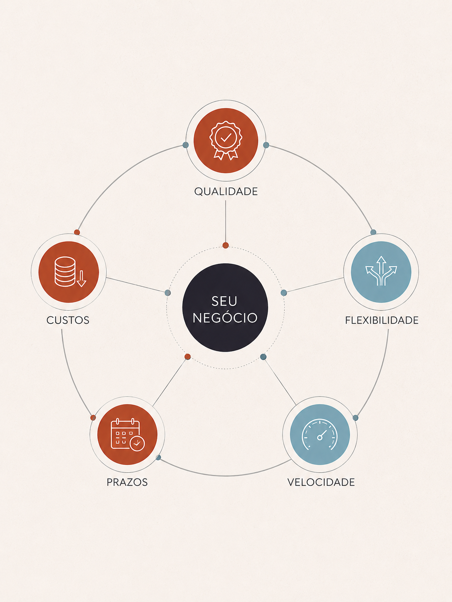

Estruturação operacional, branding industrial e implantação estratégica para negócios
O Portfólio VMORDEKAI® foi desenvolvido como um documento metodológico de apresentação institucional, alinhando consultoria técnica, governança operacional, posicionamento estratégico e desenvolvimento visual em uma única estrutura.
Mais do que uma apresentação comercial, este material atua como um guia de implantação para empresas que buscam otimização produtiva, identidade estrutural e crescimento sustentável.
O briefing detalha metodologias aplicadas em processos de produção, organização operacional, controle estratégico, branding e desenvolvimento de ecossistemas empresariais.



PRIVATE LABEL — Desenvolvimento estratégico para marcas e operações
Desenvolvimento de coleções
Criação de bolsas, mochilas e acessórios exclusivos para marcas que desejam lançar produtos próprios sem depender de estrutura interna de criação e produção.
Produto piloto e documentação técnica
Estruturação de fichas técnicas, prototipagem, padronização e organização operacional para escalabilidade produtiva.
Assessoria estratégica em Private Label
Definição de materiais, processos, diferenciais e direcionamento estrutural alinhados ao posicionamento da marca.
Terceirização Private Label
Gestão estratégica e operacional de terceiros produtivos para desenvolvimento e execução de artigos diversos, com controle de qualidade, conformidade operacional e proteção de informações técnicas do seu negócio.
Licenciamento parcial de modelos
Adaptação estratégica de modelos já validados pela VMORDEKAI® para utilização com identidade visual e aplicação comercial da empresa parceira.
PORTFOLIO — Desenvolvimento estratégico e operacional
Consultorias, implantação de processos, branding industrial, estruturação produtiva e posicionamento empresarial.
RETEAR® — Sistemas criam continuidade
A consolidação de uma marca depende da capacidade de integrar operação, identidade e tomada de decisão dentro de um mesmo fluxo estratégico.
Nesse contexto, a VMORDEKAI® desenvolveu e utiliza o ecossistema RETEAR®, que surge como uma camada complementar de inteligência tecnológica aplicada à organização produtiva, rastreabilidade operacional e padronização estrutural através de seus frameworks.
O objetivo não é apenas executar projetos, mas desenvolver bases capazes de sustentar expansão, replicabilidade e integração entre diferentes setores e modelos de negócio.
E o melhor: o ecossistema RETEAR® também pode ser aplicado à sua empresa, com frameworks adaptáveis para varejo, e-commerces, indústrias e confecções!
QUEM SOMOS
A VMORDEKAI® surgiu em 2016 com a missão de integração entre design, operação industrial e desenvolvimento técnico aplicado à moda.
Atuamos como um laboratório independente de criação, pesquisa e estruturação estratégica, conectando produto, identidade visual, engenharia produtiva e inteligência operacional.
Como parte do nosso processo de pesquisa e desenvolvimento, a VMORDEKAI® também atua como marca autoral de mochilas e bolsas conceituais, explorando funcionalidade e estética outdoor aplicada ao uso cotidiano. Conheça nosso catálogo!
Nossa atuação combina experiência prática em indústria têxtil, desenvolvimento autoral e implementação de sistemas voltados para produtividade, organização e escalabilidade.
A VMORDEKAI® utiliza o ecossistema RETEAR®, projeto tecnológico de frameworks voltados para rastreabilidade, reorganização produtiva, automação operacional e gestão escalável aplicada ao setor têxtil e industrial.
CNPJ: 26.732.865/0001-36.
Sede: Curitiba – PR.